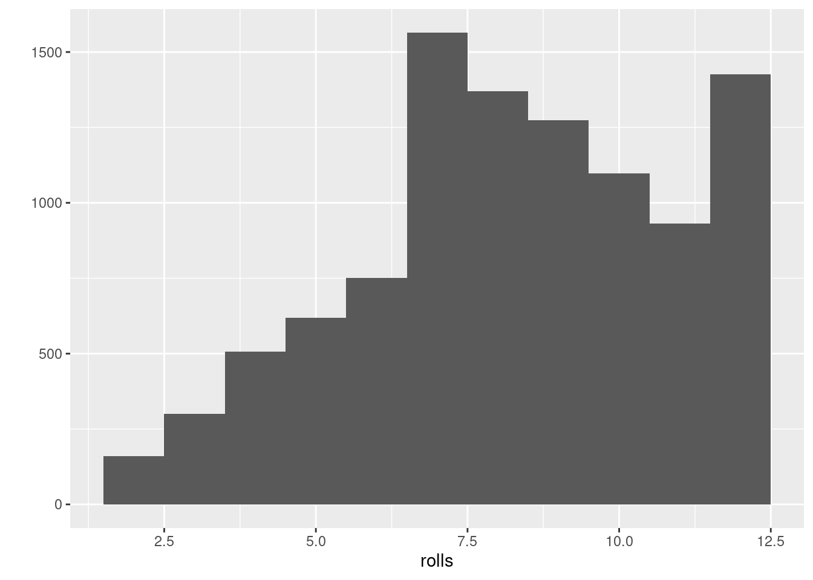
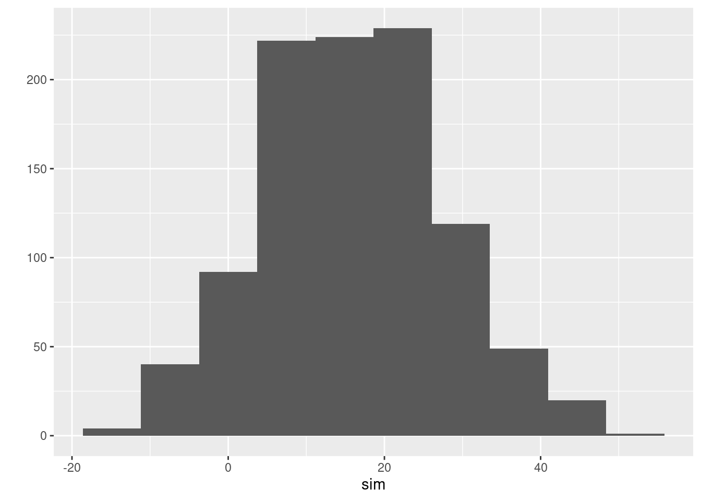

Chapter 6 Appendix
6.1 Further Reading
This is the end of this lecture and these lecture notes which have made an attempt to teach you introductory probability by building probability concepts with R in a finance application context. The field of probability and its applications is huge an rich and only a tiny part of it could be covered in this course. The hope is, of course, that the lecture has been able to teach you some tools and concepts which will enable those of you who found this subject interesting to explore it on your own, using your own interests and the literature on probability as a guide. For those of you who want to do so, let me give you a few pointers to the literature, which might cover for some of you the next steps.
6.1.1 Probability theory and mathematics
I have confessed already in the beginning of this lecture that I think that among the many probability books on the market the book by Feller (1968) is still an outstanding master piece in exposition. It is full of passion and enthusiasm for the subject and interesting throughout. Its orientation is clearly mathematical but the confinement to discrete sample spaces allows him to cover much ground with minimal machinery. Reading or studying this books is perhaps even more fun today since you can complement by using the computer to study and think about the many interesting examples contained in it, something you could not do when the book first appeared.
Among the big ideas in probability was the attempt to build a general, axiomatic framework for the field that would establish probability theory firmly as a field of mathematics. The modern mathematical formulation of probability is perhaps nowhere better presented than in Billingsley (1995). It is a very good source for those of you who have or had some more advanced training in mathematics.
6.1.2 Further studies of R
If you are a beginner of R and if you found the language and what it can do useful and interesting I recommend to study the book by Grolemund (2014). It is a great read and I have relied very much on it for this course. From this book I tried to emulate the idea that R is best taught withing a concrete context instead of teaching the language as such perhaps with a few toy examples and then apply the machinery afterwards. The book is also available online and I recommend the beginners among you very warmly to study it. You can get the book on the internet at https://rstudio-education.github.io/hopr/
More advanced students in the group who want to learn and understand R seriously as a programming language, should at some stage study Wickham (2019). This book is also freely available in an online edition at https://adv-r.hadley.nz/.
Finally let me point out to you an excellent guide to the huge number of useful books many of them freely available at the site https://www.bigbookofr.com/ which is a regularly updated list of books about R and applications of R.
6.1.3 Probability, Philosophy and Concepts
For those of you who have an interest in conceptual and foundational discussions and reflections, I would like to point you to four sources in particular. First of all, I think you should at some stage study the outstanding discussion by Diaconis and Skyrms (2019). I made several references to it in these lecture notes. It is a truly good read.
For those of you who have the training and the interest in more formal discussions, I would like to recommend the monographs of Gilboa (2009) and Halpern (2017)
An outstanding and very famous book, which is more of a meditation about randomness also with respect to financial markets is Taleb (2007). If you had to choose one and only one book in this section, it is perhaps this one.
6.1.4 Monte Carlo Simulation and Computing
We discussed a lot about simulation in this lecture. If you want to learn about Monte Carlo simulation seriously, you should at some stage study Liu (2001). A standard reference for Monte Carlo Simulation in Finance and Financial Engineering is Glasserman (2003)
6.1.5 Finance and Risk Management
There are many books on Finance, some very technical other verbose and business like. I believe that among the Finance books I know the book by Luenberger (2009) is truly outstanding. A comprehensive overview on the methods and mathematics of risk management in a financial context is McNeil, Embrechts, and Frey (2015)
6.2 Worked Solutions for Projects
6.2.1 Project 1: Proposal for worked solution
1. Your first task in this project will be to write a function which allows you
to virtually throw a pair of dice and sum up the points shown after the throw.
Here is one possible implementation. Note that there are - of course - other
ways providing the same output. The lines starting with
# are comments. You can read them when editing the function script
but R will ignore them when interpreting the function.
roll <- function(){
# create a die
die <- 1:6
# roll the dice by making use of sample. We roll two dice, therefore size has to be equal to 2
# note that we need to set replace to TRUE because both dice should be able to show all possible
# points
dice <- sample(die, size = 2, replace = TRUE)
# sum up the points of the two dice
sum(dice)
}Comment: Note that when you choose to sample twice from the points 1 - 6 using the sample()
function, you need to set the replace argument to TRUE. Check the notes or the help for
sample if you need to look up what this means. If replace is set to FALSE - as is the default with sample - then you have a situation where it is impossible that when the first die shows
a particular number, the second dice shows it as well. This is clearly not what we have in mind
if we think of dice throws. Of course we want to allow, for example, that both dice ,may show 6.
2. Simulate and plot the result of your simulation using `qplot()` with the `binwidth`
argument set to 1. Use 10000 runs of your function for the simulation.
rolls <- replicate(10000, roll())
# load library ggplot2. Note: you can load ggplot2 only if you have installed the package first:
# This can be done by typing install.packages(ggplot2) at the prompt of the R console or
# use the RStudio menues in the lower right panel.
library(ggplot2)
qplot(rolls, binwidth = 1)
Comment: Note that qplot() is a function contained in an R library in this case ggplot2. This
library is not part of base-R and therefore has to be installed and then
loaded with the library() function. While the package needs to be installed only once, it needs
to be loaded in every new R-session to make it available. There are many other functions, also
functions included in base R, that allow you to make plots. Here we ask for qplot() specifically
to familiarize you with the concept of add-pn packages and their use.
3. Are these dice fair? Why?
We answer this question by considering the sample space of this random experiment first. There are in total \(6 \times 6\) pairs, in total 36 ways to sum up points. Each pair has probability \(1/36\) and since the multiple pairs do not occur in the same event the pair probabilities that lead to a particular sum can be added. The sample space \({\cal S}\) could be visualized like this:
| Probability | Outcome | Possibilities |
|---|---|---|
| P(sum = 2) = 1/36 | 2 | (1,1) |
| P(sum = 3) = 2/36 | 3 | (1,2),(2,1) |
| P(sum = 4) = 3/36 | 4 | (1,3),(2,2),(3,1) |
| P(sum = 5) = 4/36 | 5 | (1,4),(2,3),(3,2),(4,1) |
| P(sum = 6) = 5/36 | 6 | (1,5),(2,4),(3,3),(4,2),(5,1) |
| P(sum = 7) = 6/36 | 7 | (1,6),(2,5),(3,4),(4,3),(5,2),(6,1) |
| P(sum = 9) = 4/36 | 9 | (3,6),(4,5),(5,4),(6,3) |
| P(sum = 10) = 3/36 | 10 | (4,6),(5,5),(6,4) |
| P(sum = 11) = 2/36 | 11 | (5,6),(6,5) |
| P(sum = 12) = 1/36 | 12 | (6,6) |
The frequencies with which the sums occur look very much like the theoretical probabilities for equally probable pairs. Our dice thus look as if they are fair. Fair here means that none of the two dice has a bias to land on any face more likely than on another. Of course this does not mean that all sums occur equally often, because there are for example more combinations that can result in a sum of 7 than there are combinations that can result in a sum of 12, say. If the dice are fair the frequencies will be proportional to the theoretical probabilities and for many independent throws of the dice they should get close to the theoretical probabilities.
4. Assume the dice were unfair in the following sense: Numbers 1,2,3,4 and 5 have a
probability of $1/8$ while the 6 has a probability of $3/8$. Study the help page of
the `sample`function and find out how you could give these new probability weights
to the function. If you redo your simulation analysis with the loaded dice, how does the
picture change?
roll_biased <- function(){
# Construct die
die <- 1:6
# Roll biased or laded die by specifying the probabilities such that there is relatively
# more mass on outcome 6.
dice <- sample(die, size = 2, replace = TRUE, prob = c(1/8, 1/8, 1/8, 1/8, 1/8, 3/8))
sum(dice)
}rolls <- replicate(10000, roll_biased())
qplot(rolls, binwidth = 1)
Comment: This example shows that you can determine the probabilities with which the sample function draws basic outcomes. If you would not know these probabilities but only the plot you would immediately realize that the dice must be biased because also with many rolls the relative frequencies are nowhere near where you would expect them if the dice were fair
5. Write a script for this random experiment.
We create a script with File > new File > R scriptand write the code for roll_biased into the script. That’s it.
6. Now look at the random experiment of throwing two dice with the concepts from
probability theory: What is the sample space of this experiment. What are the
probabilities of the basic outcomes? What is the probability of getting sum 7, what is
the probability of getting sum 2?
The sample space is: \({\cal S} = \{ (1,1), (1,2), (1,3), (1,4), (1,5), (1,6), \\ (2,6), (3,6), (4,6), (5,6), (6,6), (2,1), (2,2), (2,3), \\ (2,4), (2,5), (3,5), (4,5), (5,5), (6,5), (3,1), (3,2), \\ (3,3), (3,4), (4,4), (5,4), (6,4), (4,1), (4,2), (4,3), \\ (5,3), (6,3), (5,1), (5,2), (6,2), (6,1) \}\)
The probabilities of the basic outcomes are \(1/36\).
The probability of getting the sum 7 is \(6/36\) or \(1/6\), the probability of getting a 2 is \(1/36\).
Comment: I have not specified in the question whether the probabilities should be computed for the fair or the unfair die. I should have perhaps formulated more precisely. Here I showed the probabilities of the fair dice. The sample space would be the same for both cases.
7. Imagine now that you are at the casino which uses fair dice and you can spend 150 Euro
for chips. Since you have figured out that 7 is the most
likely outcome you would like to buy bets on 7. The casino
offers you a bet for 15 cent. When you win you get 1 Euro for the
bet, when you loose the Casino gets the 15 cents.
So you could make 1000 bets in total
on 7. Is this a good or a bad deal for you? Try to think about
this problem in terms of a simulation.
Comment: I realized that my formulation of the payoffs is misleading and this created confusion. This is my fault. What I should have written is: if you win you get 1 and if you loose you get nothing. Every bet costs 15 cents. This is the situation I had in mind but failed to formulate clearly.
With 15 cent per bet and a budget of 150 we can bet on 1000 rolls of the dice. Theoretically the proportion of outcomes where the sum is 7 should be 6/36 or 1/6 so you would gain 1 in about 166 cases and 0 otherwise. You would pay 150 for 1000 rolls since your chip costs 0.15 per bet. This would result in a net gain. So theoretically this should be a good deal for you.
If we take a simulation approach we have to keen the following in mind:
Now if you roll the dice 1000 times the proportion of getting will vary from run to run and sometimes it will show more and at other times less outcomes where the sum is 7, so you do not see from a simulation of 1 run of 1000 rolls clearly if you make a loss or a gain. If you simulate many such runs you will get a clearer picture.
Function for 1 run:
craps <- function(n, cost){
# roll the dice n times. For our particular example this would be n = 1000 and store the
# results, the sums in a vector outcomes.
outcomes <- replicate(n, roll())
# select the outcomes where the sum is 7
wins <- (outcomes == 7)
# Since for each win you get 1 you can sum the total wins to get your revenue. Deduct the
# total costs to get your profit
sum(wins) - (cost*n)
}One round:
craps(1000,0.15)## [1] 13Here you have a gain. But this could be due to randomness. To see clearer you might want to do many repetitions for this, say 1000.
sim <- replicate(1000, craps(1000,0.15))Lets plot the profits for you
qplot(sim, bins = 10)
On average you would make a profit under these terms. Can this be true? One way to think about it is that in one run of 1000 rolls you should make revenues of about 6/36*1000, because this is the proportion of cases where you make 1 Euro. Overall this would be 166.6667. Even if you pay 150 for this you will make a gain. It seems to be a good deal for you. No Casino in the world will ever offer such terms!
6.2.2 Project 2: Proposal for worked solution:
1. Go to the EBA website https://www.eba.europa.eu/risk-analysis-and-data/eu-wide-stress-testing
and download the
file Credit Risk IRB (https://www.eba.europa.eu/assets/st21/full_database/TRA_CRE_IRB.csv).
You can do so by downloading the file, storing it locally and then read it into R or you can
read it directly from the web.
We download the file directly and store it in an R-object, which we call eba_data
eba_data <- read.csv("https://www.eba.europa.eu/assets/st21/full_database/TRA_CRE_IRB.csv", stringsAsFactors = FALSE)This should result in an R-object eba_data (or whatever name you chose to give to the data) with
528550 records of 15 variables. One way to check this would be the dim() function we also
used in the lecture:
dim(eba_data)## [1] 528550 152-(a) Extract all variables names, using the `names()`function.
We refer to our data object by name eba_data. You must choose the name you have selected, of course.
names(eba_data)## [1] "Country_code" "LEI_Code" "Bank_name" "Period"
## [5] "Item" "Scenario" "Portfolio" "Country"
## [9] "Country_rank" "Exposure" "IFRS9_Stages" "Status"
## [13] "CR_exp_moratoria" "CR_guarantees" "Amount"
2-(b) Select all rows where the Scenario variable has value 1. Note
that the symbol you need in the R syntax for equal is `==`, the syntax is therefore
`Scenario == 1`. You might check out the R-help entry `Comparison` for further details.
We overwrite our object name eba_dataat each step.
eba_data <- eba_data[eba_data$Scenario == 1, ]Explanation: Since our object name is eba_data we subset it by eba_data[, ]$. The
first slot addresses rows the second slot addresses columns. We want to say: Take those rows
where the column Scenario takes value 1. The column scenario is eba_data$Scenario. The
filter condition is thus written in the row slot. The column slot is left blank because we
want to have records for each variable. Note that without warning R has created here a new
object, with the same name than the old one. But the new eba_data has only those rows left,
where the Scenario-Variable is equal to 1.
2 -(c) From the resulting data-frame select all rows where the Country variable is not equal to 0. (hint: The not equal operator in the R syntax is `!=`). If you look into the Metadata-File
you will see that 0 are all the aggregate exposures not broken down by country. Excluding
these will give us country exposures.eba_data <- eba_data[eba_data$Country != 0, ]2 -(d) From the resulting data frame select all rows where the Portfolio variable has value 1 or 2.These codes describe the accounting rules under which the exposure values are reported,
internal rating based (IRB) or standard approach (SA). As a hint you can use R's subset
operator `%in%` here so `Portfolio %in% c(1,2)` written with the approprate subsetting rule
will select all rows where the Porfolio variable has value 1 or 2.eba_data <- eba_data[eba_data$Portfolio %in% c(1,2), ]2-(e) From the resulting data frame choose all the rows where the Exposure variable is not 0.This
gives again disaggregated numbers.eba_data <- eba_data[eba_data$Exposure != 0, ]2-(f) From the resulting data frame choose all the rows where the Status variable has value 0.
eba_data <- eba_data[eba_data$Status == 0, ]2-(g) From the resulting data frame choose all the rows where the IFRS9_Stages variable has value 1,2, or 3.eba_data <- eba_data[eba_data$IFRS9_Stages %in% c(1,2,3), ]2-(h) From the resulting data frame choose all the rows where the CR_guarantees variable is 0
eba_data <- eba_data[eba_data$CR_guarantees == 0, ]2- (i) From the resulting data frame choose all the rows where the CR_exp_moratoria variable is 0.
eba_data <- eba_data[eba_data$CR_exp_moratoria == 0, ] 2- (j) From the resulting data frame, drop all rows where the Amount variable is 0.
eba_data <- eba_data[eba_data$Amount!= 0, ]This results in a new data frame with dimension:
dim(eba_data)## [1] 23512 153. Check the type of the Amount variable.
typeof(eba_data$Amount)## [1] "character"Explanation: typeof(eba_data$Amount) checks the type of the variable and returns the actual
type. We have reported amounts as strings of characters not as numerics in the data so far.
4. Transform the Amount variable to type `numeric()`eba_data$Amount <- as.numeric(eba_data$Amount)## Warning: NAs introduced by coercion5. Check for NA in the Amount variable in the resulting data frame and if you find any, remove them. sum(is.na(eba_data$Amount))## [1] 5763Explanation: is.na(eba_data$Amount) returns a logical vector which is TRUE at the components
where the Amount variable has value NAand FALSEotherwise. Applying sum() to this vector
coerces TRUEto 1 and FALSEto 0. If 0 there is no NA otherwise we have some, in particular we
have 5763 instances of NA. This comes from the fact that some components in Amount contained
the character . which returns NAif as.numeric()is applied to it. This seems clear, since
after all . is a string which corresponds to no number.
eba_data <- na.omit(eba_data)6. Change the Amount variable from the actual unit of Million Euros to the unit of 1 Euro and throw
away data smaller than 1 after this transformation.
eba_data$Amount <- eba_data$Amount*10^6Explanation: If an amount is expressed in units of one million, one million Euro appears as 1. If we multiply by 10^6 this is expressed as 1 000 000. We transform the Amount variable in this way and overwrite the old variable by the values with the new units.
eba_data <- eba_data[eba_data$Amount >= 1, ]Explanation: We identify the values larger than 1 by logical subsetting of the Amount variable and select all these values from the data frame by selecting all rows where the Amount variable is larger than 1.
7. Select the leading digits from the Amount variable, using R's string functions and add a
variable with name LD to your data frame.
eba_data$LD <- as.character(eba_data$Amount) |>
substr(1,1)Explanation: We can extract the leading digit from a string of characters x by applying
the substr() function, with arguments 1,1 to x. To operate with this logic on Amount, we have
to transform the type of Amount back to character first. We then use the R-pipe to apply
substr to this new variables. The syntax is
equivalent to substr(as.character(eba_data$Amount),1,1)
8. Compare the empirical frequencies in the data with the theoretical frequencies
from Benford's law. Do the data look ok or suspicious?comptable <- as.data.frame(table(eba_data$LD)/length(eba_data$LD))
names(comptable) <- c("Digit", "Freq")Explanation: We tabulate the LD data using the R function table(). We divide each count by
the number of observations using the length()function to get proportions. The output of this
operation is then forced into a data frame and saved in the variable comptable we assign the
names Digitand Freq to the variables.
comptable$Freq_Benf <- log10(1 + 1/as.numeric(comptable$Digit))Explanation: We add a new variable to our data frame using the formula for Benfords law for the distribution of digits \(\{1,2,3,4,5,6,7,8,9\}\). Since we do a computation with logs and division we have to be careful to change the type of our character numbers which are expressed as strings to numerical types first.
comptable## Digit Freq Freq_Benf
## 1 1 0.28810398 0.30103000
## 2 2 0.17129133 0.17609126
## 3 3 0.12811529 0.12493874
## 4 4 0.09878497 0.09691001
## 5 5 0.08245267 0.07918125
## 6 6 0.07188471 0.06694679
## 7 7 0.06148630 0.05799195
## 8 8 0.05238768 0.05115252
## 9 9 0.04549308 0.04575749The digit distribution matches up very well. So from the perspective of Benford’s law about the distribution of leading digits the EBA exposure data from the one data file we inspected here look perfectly ok and seem not to be cooked up in any way. Note that this does not mean that there are no problems in these data. This analysis jsut provides some first order evidence that the data seem not to be obviously manipulated or forged.